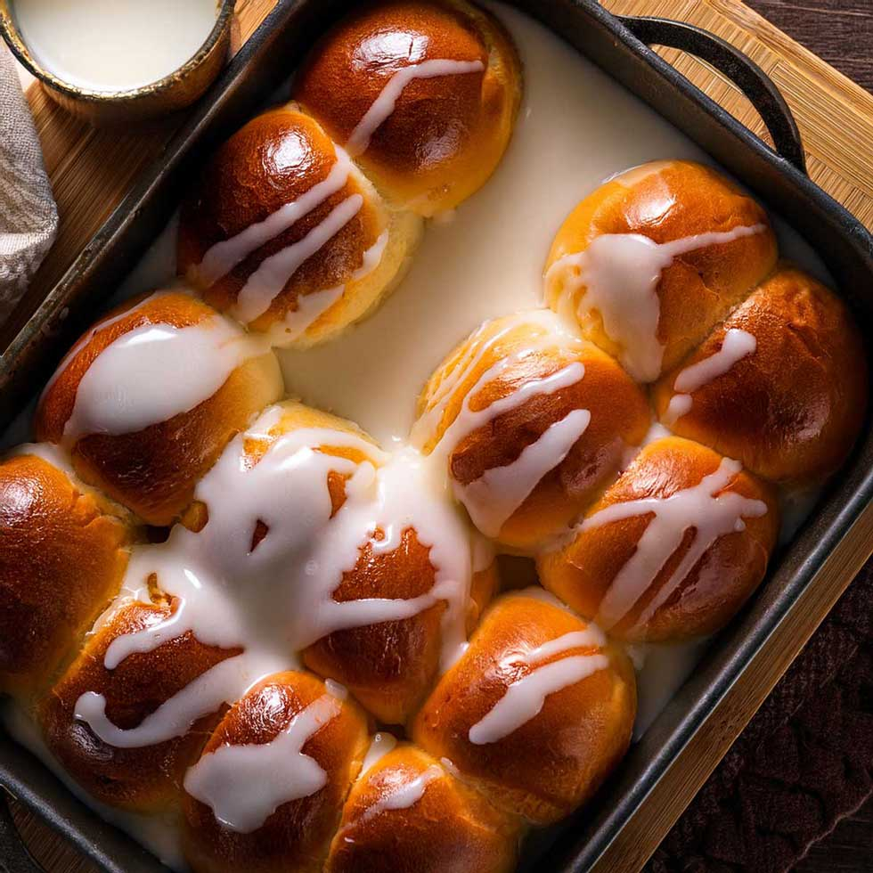

Pani Popo

Description
Pani Popo are traditional Samoan sweet coconut buns. They feature soft, fluffy yeast rolls baked directly in a rich, sweet coconut cream sauce.
Ingredients
The Pani Popo Dough
- 4 cups Plain Flour (to begin with)
- 1 tsp Salt
- 50 grams Butter
- 3 tbsp White Sugar
- 1 cup Warm Water (to dissolve yeast)
- 3 tsp Active Dry Yeast
- 2-3 cups Warm Water (to incorporate the batter)
- 2-3 cups Plain Flour (additional, for kneading)
The Coconut Cream Sauce
- 1 can Coconut Cream (or 425ml fresh coconut cream)
- 2 tbsp Plain Flour (for thickening)
- 1 cup White Sugar
Steps
The Bun
- Start by dumping your four cups of flour into a large bowl, add the salt and then rub in the butter until the flour feels 'silky' and gets a little bit clumpy. Then make a well in the middle of the bowl and chuck your sugar in there.
- Time to work on the yeast. Put your 3 teaspoons of yeast into a smaller bowl (that's not made of plastic). Slowly add a cup of very warm water and stir until the yeast is dissolved.
- Next, pour the yeast-water into the flour mixture - into the well with the sugar. You should see the yeast begin to bubble up as it makes contact with the sugar.
- And then you just grab a wooden spoon and fold the flour into the liquid - mix it all up - adding more warm water (2 to 3 cups) until it becomes a thick batter that still jiggles a bit when you shake the bowl.
- Cover the bowl lightly with a clean towel or baking paper and leave it in a warm, dry spot to rise for 2 hours.
- When you come back to the dough, it should have doubled in size with lots of holes in it. Spread 2 cups of fresh flour out on a clean counter, then pour the sticky, hole-y batter on to it. Then you're going to fold the new flour into the dough and knead it until it's a lot less sticky because it's absorbed almost all of the flour. (This shouldn't take much more than 5 minutes).
- When you've got a dough that's a lot more solid than batter, easier to hold but still a little bit sticky, chuck it back in the bowl and cover again for another round of rising.
- This second rise should only take an hour and a bit. The dough should have doubled in size again but with only a few holes this time. On your clean counter top, dump another half cup of fresh flour because you're going to knead the dough again, but only to get rid of a little more sticky-ness.
- And now it's time to roll your buns. That means, cut a palm-full of dough, roll it between your hands into a short, thick rope thing, then tie it like an 'almost' knot. If that's too hard, you can always just roll a sphere - up to you.
- ! Now is the perfect time to pre-heat your oven - 200 degrees Celsius
- Place your buns in neat rows in a pan that can take up to 24 buns (sorry, I'm still not sure what size pan that is). Let them sit there for a while (they will continue to rise) as you go prepare the coconut cream sauce.
The Coconut Sauce
Pour one can (or 450ml) of coconut cream into a container. Chuck 2 tablespoons of plain flour into the empty can (or a cup) and slowly pour warm water into it - stirring, stirring, stirring - until the flour dissolves.
- When the can/cup is full of water, pour the mixture into the coconut cream. Add one more can/cup of warm water - still stirring - and then stir in a cup of sugar
The Final Step
- You just need to pour your coconut cream sauce into the pan with the buns (save maybe a cup of cream to add halfway through the bake) then put the pan in the oven and go put your feet up for 20 minutes.
- Come back after 20 minutes to check that your buns haven't burnt and the sauce hasn't spilled over and the oven is heating everything up evenly, etc. The sauce should have cooked down a little bit, so now's a good time to add the last bit of coconut cream, then close the oven for another little while.
- After around another 20-25 mins (roughly 45 minutes in total), your buns should be golden on top with coconut cream bubbling around the bottom. Take the pan out and cover it with tin foil so the buns don't dry out as they cool.
Home